Source Reference Disclosure: The Run 10 brief referenced a previously approved inspirational image that was not attached in the handover prompt or present in workspace storage. This implementation adheres directly to the approved Section 2 visual and architectural specifications anchored to the verified Run 09 production baseline (e956a97).
1. CBD Cycle · Default State (Run 09 Baseline vs Run 10 Living Orbit)
Shows the elevated machined central CBD hub (recessed housing, physical bezel rim, concentric dial surfaces), three distinct orbital depth levels (recessed inner gauge, raised interactive pathway with directional chevrons, outer atmospheric ring), and beveled phase cards.
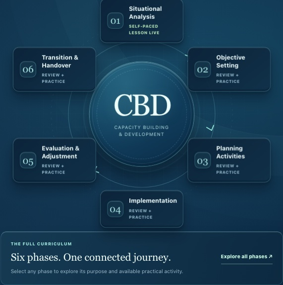
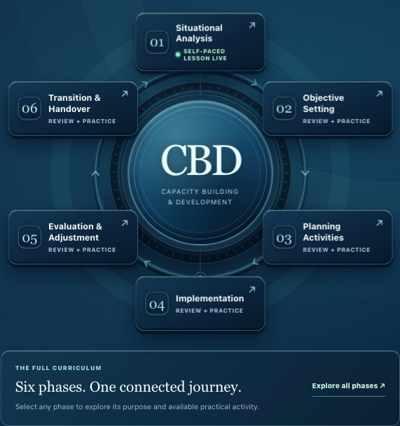
2. Phase 01 Hover / Keyboard Focus State
Hovering or focusing Phase 01 (Situational Analysis) elevates the card, illuminates only its top radial spoke and orbital node, directs the central hub rim highlight toward Phase 01, reveals the launch corner arrow, and syncs the supporting phase caption.
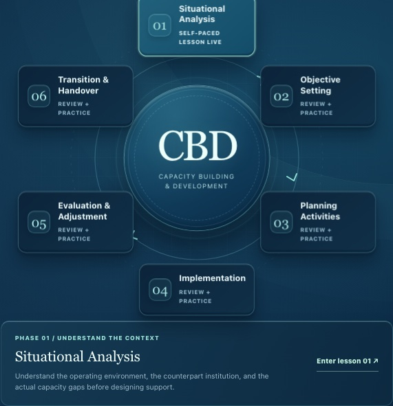
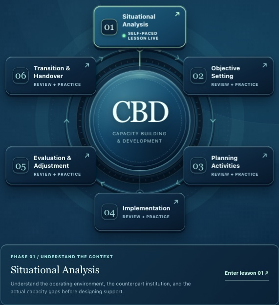
3. Phase 04 Hover / Keyboard Focus State
Focusing Phase 04 (Implementation) switches single-active orbital illumination cleanly to the lower station without competing connector highlights.
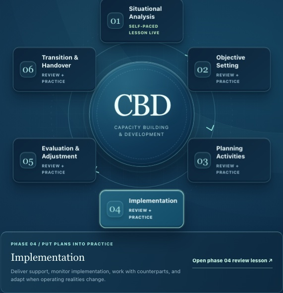
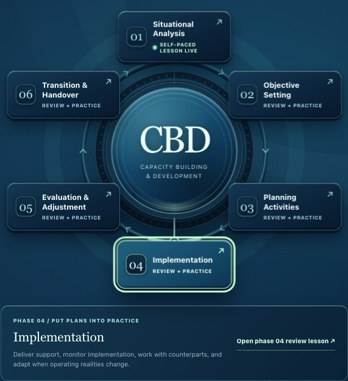
4. Full Desktop Composition (1440px EN)
Preserves CARANA branding, typography, dark navy/teal/mint palette, hero CTAs, curriculum summary, and overall page balance.
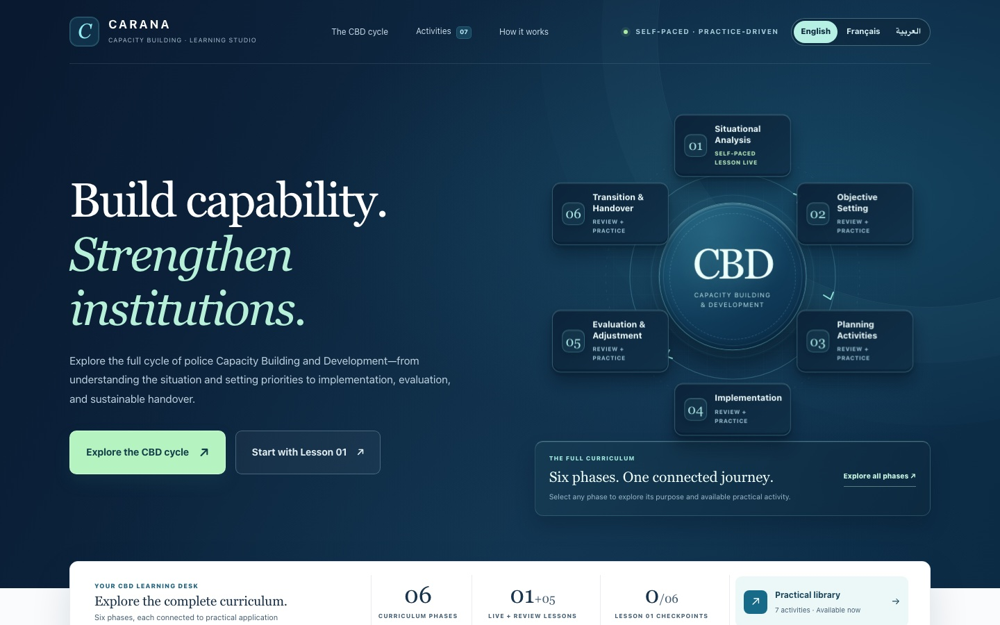
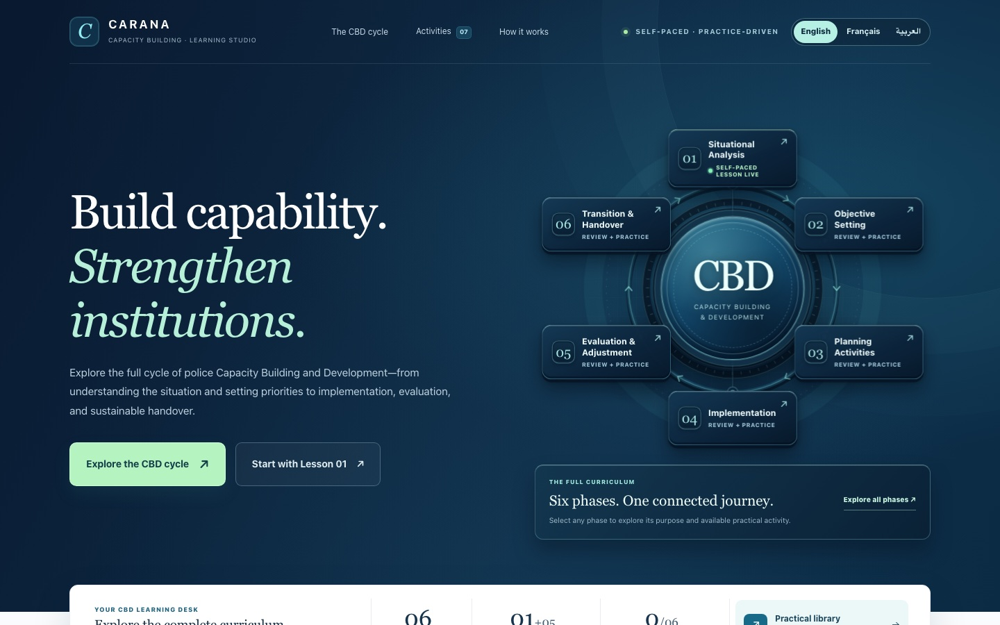
5. Mobile Layout (390px EN)
Maintains clean vertical flow with zero horizontal overflow; phase cards act as immediate single-tap links without hover dependencies.
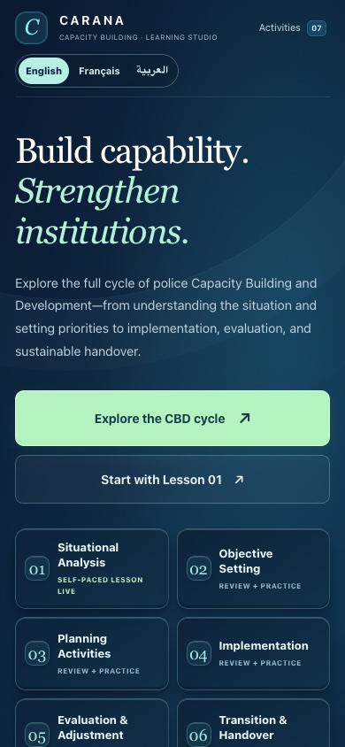
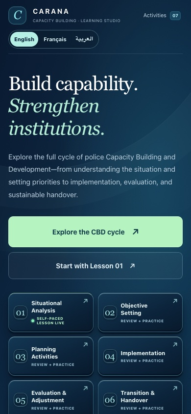
6. Mobile Orbit Cards · Direct One-Tap Navigation (390px EN)
Dedicated inline-end spacing prevents the launch icon from colliding with longer card titles such as Implementation, while keeping touch targets above WCAG 2.5.5 44x44 CSS pixels.
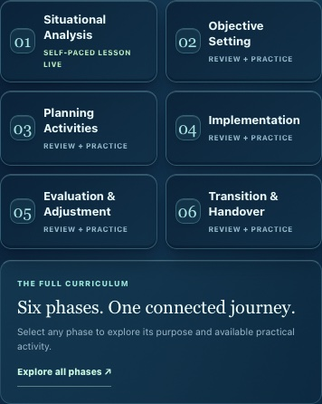
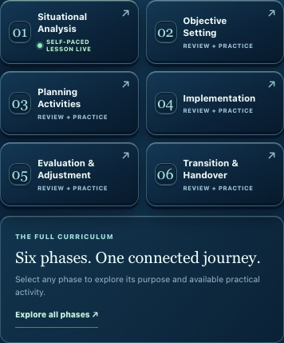
7. Arabic RTL Cycle (dir="rtl")
Preserves full Arabic script rendering, clean typographic tracking (letter-spacing: 0), RTL directional mirroring on card launch arrows, and crisp legibility.
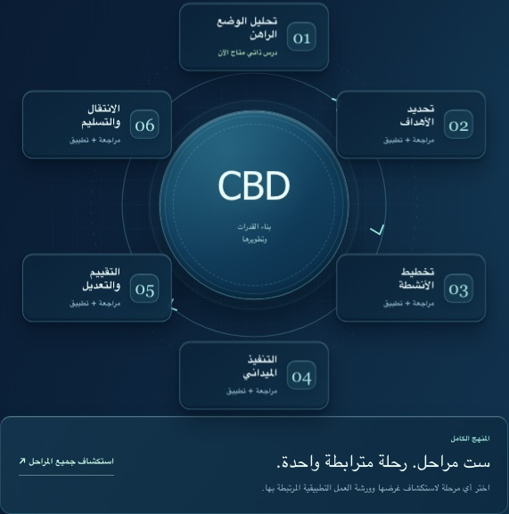
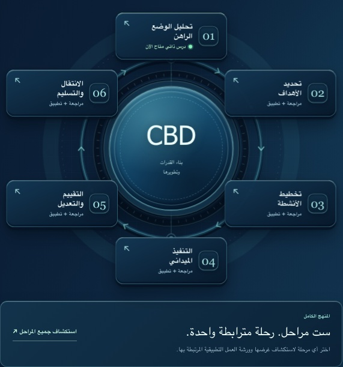
8. French Long Phase Labels (fr-FR)
Verified zero top clipping on Analyse de la situation and balanced clearances around longer multi-line French labels.
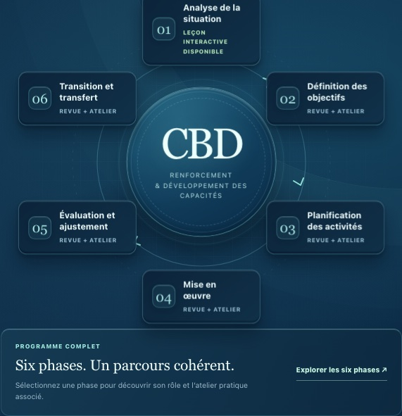
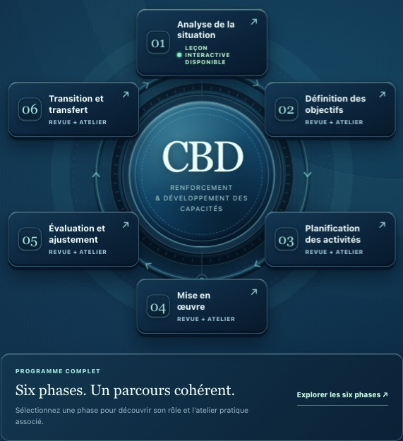
9. Narrow Viewport Reflow Verification (320px French)
Single-column direct-tap card stack at 320px width with zero horizontal scrolling or clipped labels.
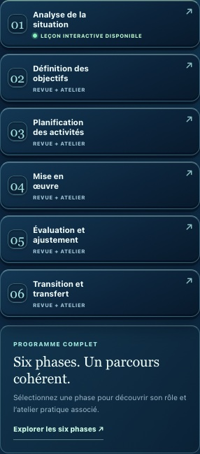
Visual acceptance remains with the owner. Source attribution, lesson content, availability labels, AI tutor functionality, narration safety controls, Speed Insights monitoring settings, and learner storage remain preserved.